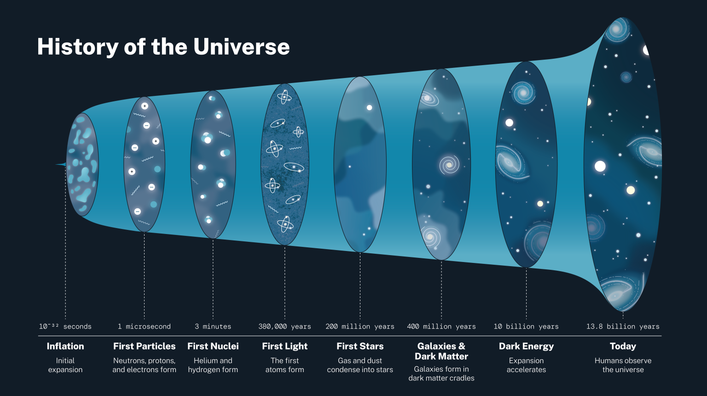
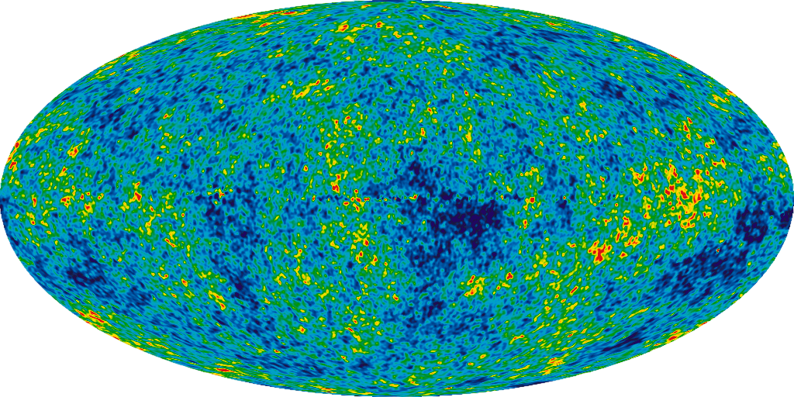

BIG BANG
Cosmic History
Explore the origins of the universe and the monumental eventthat sparked the creation of everything we know today.
The Universe’s History
The origin, evolution, and nature of the universe have fascinated and confounded humankind for centuries. New ideas and major discoveries made during the 20th century transformed cosmology – the term for the way we conceptualize and study the universe – although much remains unknown. Here is the history of the universe according to cosmologists’ current theories.Cosmic Inflation
Around 13.8 billion years ago, the universe expanded faster than the speed of light for a fraction of a second, a period called cosmic inflation. Scientists aren’t sure what came before inflation or what powered it. It’s possible that energy during this period was just part of the fabric of space-time. Cosmologists think inflation explains many aspects of the universe we observe today, like its flatness, or lack of curvature, on the largest scales. Inflation may have also magnified density differences that naturally occur on space’s smallest, quantum-level scales, which eventually helped form the universe’s large-scale structures.

Big Bang and Nucleosynthesis
When cosmic inflation stopped, the energy driving it transferred to matter and light – the big bang. One second after the big bang, the universe consisted of an extremely hot (18 billion degrees Fahrenheit or 10 billion degrees Celsius) primordial soup of light and particles. In the following minutes, an era called nucleosynthesis, protons and neutrons collided and produced the earliest elements – hydrogen, helium, and traces of lithium and beryllium. After five minutes, most of today’s helium had formed, and the universe had expanded and cooled enough that further element formation stopped. At this point, though, the universe was still too hot for the atomic nuclei of these elements to catch electrons and form complete atoms. The cosmos was opaque because a vast number of electrons created a sort of fog that scattered light.Recombination
Around 380,000 years after the big bang, the universe had cooled enough that atomic nuclei could capture electrons, a period astronomers call the epoch of recombination. This had two major effects on the cosmos. First, with most electrons now bound into atoms, there were no longer enough free ones to completely scatter light, and the cosmic fog cleared. The universe became transparent, and for the first time, light could freely travel over great distances. Second, the formation of these first atoms produced its own light. This glow, still detectable today, is called the cosmic microwave background. It is the oldest light we can observe in the universe.

Heat map of the infant universe
Dark Ages
After the cosmic microwave background, the universe again became opaque at shorter wavelengths due to the absorbing effects of all those hydrogen atoms. For the next 200 million years the universe remained dark. There were no stars to shine. The cosmos at this point consisted of a sea of hydrogen atoms, helium, and trace amounts of heavier elements.First Stars
Gas was not uniformly distributed throughout the universe. Cooler areas of space were lumpier, with denser clouds of gas. As these clumps grew more massive, their gravity attracted additional matter. As they became denser, and more compact, the centers of these clumps became hotter – hot enough eventually that nuclear fusion occurred in their centers. These were the first stars. They were 30 to 300 times more massive than our Sun and millions of times brighter. Over several hundred million years, the first stars collected into the first galaxies.Reionization
At first, starlight couldn’t travel far because it was scattered by the relatively dense gas surrounding the first stars. Gradually, the ultraviolet light emitted by these stars broke down, or ionized, hydrogen atoms in the gas into their constituent electrons and protons. As this reionization progressed, starlight traveled farther, breaking up more and more hydrogen atoms. By the time the universe was 1 billion years old, stars and galaxies had transformed nearly all this gas, making the universe transparent to light as we see it today.The Future
For many years, scientists thought the universe’s current expansion was slowing down. But in fact, cosmic expansion is speeding up. In 1998, astronomers found that certain supernovae, bright stellar explosions, were fainter than expected. They concluded this could only happen if the supernovae had moved farther away, at a faster rate than predicted.Scientists suspect a mysterious substance they call dark energy is accelerating expansion. Future research may yield new surprises, but cosmologists suggest it’s likely the universe will continue to expand forever.
Stars Stories
Which star and planet do you want to explore?

NASA's Webb Peers into the Extreme Outer Galaxy
Astronomers have directed NASA's James Webb Space Telescope to examine the outskirts of our Milky Way galaxy...
Read MoreArticle - 1 week ago

NASA's Webb Peers into the Extreme Outer Galaxy
Astronomers have directed NASA's James Webb Space Telescope to examine the outskirts of our Milky Way galaxy...
Read MoreArticle - 1 week ago

NASA's Webb Peers into the Extreme Outer Galaxy
Astronomers have directed NASA's James Webb Space Telescope to examine the outskirts of our Milky Way galaxy...
Read MoreArticle - 1 week ago

NASA's Webb Peers into the Extreme Outer Galaxy
Astronomers have directed NASA's James Webb Space Telescope to examine the outskirts of our Milky Way galaxy...
Read MoreArticle - 1 week ago
NASA's Webb Peers into the Extreme Outer Galaxy
Astronomers have directed NASA's James Webb Space Telescope to examine the outskirts of our Milky Way galaxy...
Read MoreArticle - 1 week ago
NASA's Webb Peers into the Extreme Outer Galaxy
Astronomers have directed NASA's James Webb Space Telescope to examine the outskirts of our Milky Way galaxy...
Read MoreArticle - 1 week ago
.png)